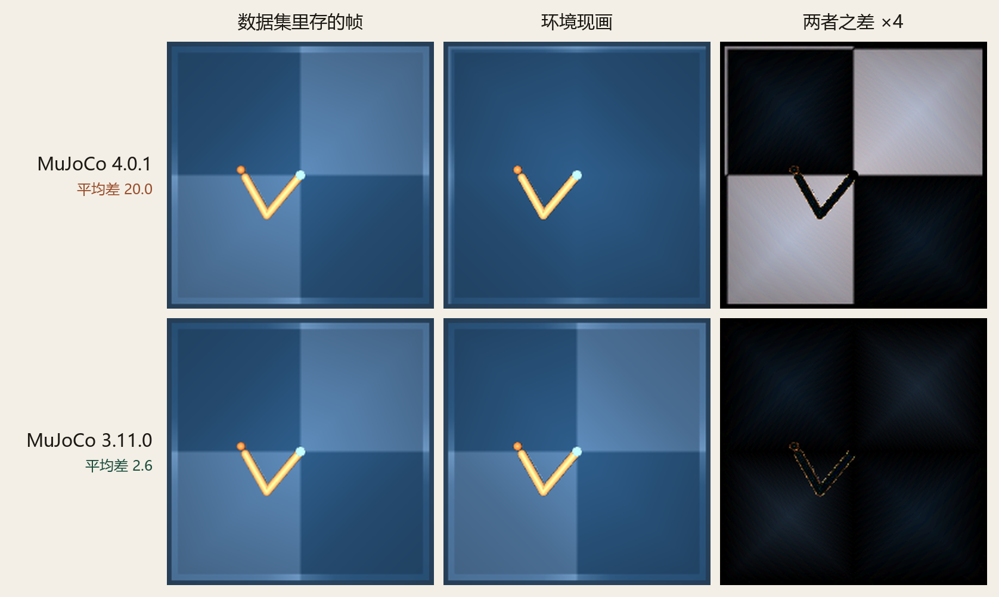

LeWorldModel · 2026.11.22
A Frame Squeezed into 192 Numbers, and Actions Chosen Inside Them: LeWorldModel on a W7900



The most tempting use of a world model is to play out the consequences in your head before you move. The direct way is to draw every future frame. It looks good, and it is expensive: in the V-JEPA 2 paper, the video-generation planner built on Cosmos takes 4 minutes on one RTX 4090 to decide a single action. The other road draws no pixels and predicts only the features of the next frame. That is JEPA, the joint-embedding predictive architecture LeCun has pushed for years. It is cheap, and it has an old weakness: if the encoder maps every image to the same vector, "predict the next frame's features" becomes a question that is always answered correctly. The error is zero and the model has learned nothing. This is called representation collapse.
LeWorldModel (LeWM) prescribes a single remedy for this old weakness: in every training batch, check whether the features look like a standard normal cloud. If they do, they are spread out and have not squeezed into a point. The loss is down to two terms, and one hyperparameter is left to tune. The whole model has 15 million parameters; the paper says it trains in a few hours on one GPU and plans in under a second, 48 times faster than DINO-WM, which uses frozen DINOv2 features.
The work comes from Mila and Université de Montréal, New York University, Samsung SAIL and Brown University. The authors are Lucas Maes, Quentin Le Lidec, Damien Scieur, Yann LeCun and Randall Balestriero. It appears at NeurIPS 2026; the paper is arXiv:2603.19312 and the project page is le-wm.github.io. On one AMD Radeon Pro W7900, I evaluated the authors' released checkpoints in all four environments and trained one model from scratch with the paper's settings.
Collapse is JEPA's old weakness
Predicting features instead of pixels skips a lot of wasted work: how the leaves sway and what the floor texture looks like do not help with "what happens if I push the T-shaped block". The price is that the supervision signal becomes the features themselves. Pixels are fixed; features are whatever the encoder decides, and the encoder is free to cheat by encoding everything as the same vector.
Every existing defense against collapse has its own cost. I-JEPA and V-JEPA use an EMA with stop-gradient: the target encoder is a moving average of the online encoder, and no gradient flows to the target. It does not collapse, but it does not minimize any explicit objective, and nobody can say exactly why it does not collapse. DINO-WM sidesteps the problem by using a frozen DINOv2 as the encoder; what is not trained cannot collapse. The price is a representation locked in by pretraining, and every frame carries a full map of patch features into planning, so one plan takes 47 seconds. PLDM trains end to end from pixels and fights collapse with seven VICReg-style loss terms, among them variance, covariance, temporal smoothness and inverse dynamics, with six weights to tune. To tune PLDM fairly as a baseline, the LeWM authors grid-searched 256 configurations on Push-T alone; once tuned, PLDM's success rate on Push-T over three seeds is 78.0 ± 5.0, the widest spread of the three methods. Hard to tune, or too slow.
SIGReg: writing "do not collapse" as a normality test
SIGReg comes from LeJEPA, by Balestriero and LeCun in 2025. The idea: testing whether a batch of 192-dimensional vectors is an isotropic standard normal is hard and unstable in high dimension, but the Cramér–Wold theorem says that if every one-dimensional projection of a distribution is right, the whole distribution is right. So each batch draws 1024 random unit directions, projects the vectors onto each one, runs an Epps–Pulley normality test on each of the 1024 sets of numbers, and averages the statistics into a loss.
The Epps–Pulley test compares characteristic functions. The le-wm implementation is a few lines: multiply the projected numbers by 17 points t between 0 and 3 and average their cosines and sines, which gives the empirical characteristic function of those numbers; compare it point by point with the standard normal's characteristic function exp(−t²/2), and sum the weighted squared differences. Features squeezed into one point project to the same number in every direction. Their characteristic function is a wave that never decays, as far from exp(−t²/2) as it gets, and the test fails.
So the training loss has just two terms: the mean squared error between the predicted and the actual next-frame vectors, plus λ times SIGReg. No EMA, no stop-gradient; gradients flow through every component. Ablations over the number of projections and integration points barely change the result. The only knob that matters is λ: 0.1 in the paper, 0.09 in the repository config. One hyperparameter can be found by bisection; PLDM's six weights form a six-dimensional grid.
One vector per frame
The encoder is a ViT-Tiny: patch 14, 12 layers, 3 heads, hidden size 192, about 5 million parameters. Only the final layer's [CLS] token is kept, followed by an MLP projection with BatchNorm. The authors explain why that projection is there: the LayerNorm at the end of the ViT stops SIGReg from making progress, so one more layer has to sit after it for the normality test to move these vectors.
The predictor is a 6-layer, 16-head Transformer of about 10 million parameters. It looks at the vectors of the last 3 frames and predicts the next one autoregressively under a causal mask. Actions enter every layer through AdaLN-zero, a stabilizing trick from the diffusion model DiT: each layer's modulation and gates start at zero, so every layer begins as the identity, and the effect of actions is learned bit by bit.
The training data holds only observations and actions: no rewards, no task labels. The frame skip is 5, each sample is 4 frames with 4 blocks of actions (5 raw actions per block), images are 224×224, the batch is 128, each environment has 10,000 to 20,000 trajectories, and training runs for 10 epochs.
Put plainly, a 224×224 image ends up as 192 numbers, and the whole world model reasons inside those 192 dimensions.
Choosing actions in 192 dimensions
Planning uses the cross-entropy method (CEM). Encode the current image and the goal image into one vector each. Sample 300 action sequences of 5 blocks each, and let the predictor roll each sequence forward 5 steps. The L2 distance between the final vector and the goal vector is the cost. Keep the 30 cheapest, resample from their mean and standard deviation, and repeat for 30 rounds. Five blocks of actions cover 25 environment steps, and the plan is executed in full before planning again. No image is generated at any point.
There is an inconspicuous detail in stable-worldmodel: the vectors of the current image and the goal are cached across the 30 iterations. One plan encodes only 2 images; the remaining 300×30 rollouts run entirely inside the predictor, on 192-dimensional vectors. That is where the speed comes from: each frame in DINO-WM carries about 200 times as many tokens as in LeWM.
The exam itself should be spelled out too. A state drawn at random from the dataset is the start, the state 25 steps later on the same trajectory is the goal, and the budget is 50 steps; reaching the goal counts as success. This is short-range goal matching, not a long task.
The paper's report card: two wins, two losses
In Figure 6 of the paper, LeWM reaches 96% on Push-T from pixels alone, 18 points above PLDM's 78% and above DINO-WM with proprioception (92%); on Reacher it gets 86%, against 78% for PLDM and 79% for DINO-WM. The two losses are just as clear. On the simplest environment, Two-Room, LeWM gets 87% and PLDM 97%, while DINO-WM and goal-conditioned behavior cloning (GCBC) are both perfect. On OGBench-Cube it gets 74%, behind DINO-WM's 86% and GCBC's 84%, while random actions already reach 48%. The authors attribute Two-Room to the environment's low intrinsic dimension, which makes it hard to fill a 192-dimensional Gaussian; but in the appendix, the linear probe for the agent's position has a correlation of 0.996. The information is there, and the gap may lie in the dynamics or in planning.
On speed, Figure 3 of the paper gives the full planning time as 0.98 seconds for LeWM and 47 seconds for DINO-WM, measured on one NVIDIA L40S. The paper also compares them at equal compute (fixed FLOPs): 90% against 13% on Push-T, 74% against 48% on Cube. DINO-WM carries too many tokens per frame, so with a fixed budget it can only think a few rounds. The factor of 48 comes from the granularity of the representation, not from SIGReg; SIGReg's contribution is making end-to-end training with one vector per frame stable.
One knob, and several switches
"Only one hyperparameter is left" holds for the loss only. In the Push-T ablations in the appendix, success stays above 80% for λ between 0.01 and 0.2 and only drops sharply at 0.5, so that knob really is easy to set. But changing the predictor's dropout from 0.1 to 0 drops success from 96% to 78%, right back to PLDM's level, and 0.5 gives 66.7%. A predictor one size smaller gets 80.7%, and one size larger also drops, to 86.7%. Shrinking the embedding from 192 to 24 dimensions takes success from the low nineties to the low seventies. Adding a pixel reconstruction loss drops success from 96% to 86%; the authors' reading is that reconstruction forces the model to remember details that do not matter for control. Swapping the planner for gradient-following methods such as Adam, RMSProp and SGD gives 84%, 67.3% and 26%; the derivative-free CEM is best. A ResNet-18 encoder gets 94%, not much different. The architectural switches have not gone away; they are simply outside the scope of "one hyperparameter".
How much physics fits in 192 numbers
Linear probes check whether the information is there. On Push-T, reading the agent's position, the block's position and the block's angle linearly from the 192-dimensional vector gives correlations of 0.974, 0.986 and 0.902. The block angle is far better than PLDM's 0.745 and close to DINO-WM's 0.979, which uses DINOv2 features. The weakness is detail: on Cube, the end effector's yaw reaches only 0.124, against 0.828 for DINO-WM. Keeping one vector per frame throws away exactly this kind of thing, orientation.
In the "violation of expectation" experiment, objects teleport, and the prediction error rises significantly in all three environments (p < 0.01); changing only an object's color does not change the error significantly. The model is more sensitive to physically impossible changes, though the lack of "surprise" at a color change may simply mean the representation never kept the color. During training, trajectories in the latent space also straighten on their own, more than in PLDM, which has an explicit temporal-smoothness term.
What it has not shown yet
The exam is short and small: four simulated environments, a goal 25 steps away on the same trajectory, and replanning after 5 blocks. In the three environments that also report GCBC, LeWM wins only on Push-T; tasks that imitation alone solves cannot tell whether "learn the world, then plan" is worth its extra cost. The statistics are thin too: only Push-T reports variance over seeds, and the other environments are a single run of 50 episodes, where 4 points are just 2 successes. In this reproduction, the same Two-Room checkpoint went from 84% to 96% with a different seed for the start states. What a world model really needs to show is unseen goals, long tasks that require detours, and real robots, and the paper has not touched those yet.
One W7900: not a line of code changed, the trouble was elsewhere
le-wm itself is small. Environments, planners and data loading live in stable-worldmodel and the training loop in stable-pretraining, all in Python. PyTorch's "cuda" device already points at HIP on ROCm, and the ViT's attention goes through SDPA, which uses flash attention kernels on this card. So not a line of le-wm changed; the trouble was all outside it.
The dependencies are a chain reaction. stable-worldmodel 0.1.1 moved the HDF5 reader that eval.py needs into the format extra. transformers 5 renamed the ViT parameters, so the authors' released weights no longer load, which means going back to transformers 4; that requires huggingface-hub below 1, which in turn requires datasets below 5. Weights and data also have to sit in the right places: load_pretrained hard-codes downloads from huggingface.co, datasets must go into a datasets/ subfolder, and the file names in the evaluation configs differ from those in the archives. A few links in the download script handle all of this; not a single config file was touched.
Training throughput is a separate matter. A training step on synthetic data takes 358 milliseconds, and half of the GPU time goes to bf16 matrix multiplications. Setting one environment variable, PYTORCH_TUNABLEOP_ENABLED=1, makes PyTorch time every candidate kernel in rocBLAS and hipBLASLt for each matrix shape and keep the fastest. The large matrix multiplications that compute weight gradients all switched kernels, and a step dropped to 279 milliseconds.
Newer MuJoCo draws a different floor from the dataset
Two-Room and Push-T are drawn by pygame on the CPU, and they matched the paper on the first evaluation. Reacher is drawn by MuJoCo, through Mesa's radeonsi driver on the W7900, and it got only 66%, 20 points below the paper.
The key is how the evaluation feeds images. The goal image comes from the dataset, and so does the current image at the start; after that, every current image is rendered by the environment. If the two renderings differ systematically, the second plan chases a stored goal with a freshly rendered image. Writing a dataset state back into the environment, rendering it and comparing it pixel by pixel with the frame stored in the same row shows the arm exactly in place but a different floor: the dataset has a four-square checkerboard of light and dark, the fresh render one flat dark blue, a mean difference of 20 gray levels (the second figure at the top). Switching to OSMesa software rendering on the CPU gives exactly the same difference. The problem is not the GPU.
Left unpinned, dm_control pulls in MuJoCo 4.0.1, released this November, while the dataset file is stamped March 2026. Going back release by release, 3.11.0 differs from the dataset by only 2.6 gray levels, and from 3.12.0 on the difference is 20. With 3.11.0 pinned, Reacher returns to 76%. Physics from the dataset's era, 3.5.0, still gives 76%; two more seeds give 82% and 80%, a mean of 79%, still about two standard deviations below the paper. This trap has nothing to do with AMD; a fresh install on any card today walks into it. What it shows is how sensitive a world model that compares pixels with pixels is to its renderer: change the texture of the floor, and the same weights lose 10 points.
What the validation shows
The first figure at the top is this run's result. Each evaluation of a released checkpoint uses the default settings of eval.py, 50 episodes: Two-Room gets 86%, 96% and 84% over three seeds, a mean of 89%, against 87% in the paper; Push-T gets 94%, against 96%; OGBench-Cube 68%, against 74%; Reacher 76%, 82% and 80% over three seeds, a mean of 79%, against 86%. Near 80% success, the standard deviation over 50 episodes is about 6 points. Apart from Reacher, the three environments are within one to two standard deviations of the paper, and Cube's random policy matches the paper's 48% exactly. Two-Room's random policy gets 18% to 32% here, against 0% in the paper, which does not say how its random baseline was taken. The three videos are successful episodes: on the left the agent follows LeWM's plan, in the middle is the original trajectory from the dataset, and on the right is the goal.
Training from scratch was done for Two-Room only. Every setting is the repository default (the predictor sees 3 frames, as in the released checkpoint), except that the epochs are set to the 10 in the paper's appendix. The 51,380 steps took 4 hours 41 minutes, and the validation loss fell steadily from 8.06 to 0.157 (the third figure at the top). The trained checkpoint gets 92%, 94% and 94% over three seeds, a mean of 93%; the authors' released checkpoint averages 89% on the same three seeds, and the paper reports 87%. The gap is about 1.4 standard deviations, so the most that can be said is that it is no worse than the released one. "Trains in a few hours on one GPU" holds on the W7900.
Planning time: the first plan in each log always takes around 40 seconds. That is the solver planning all 50 environments one after another, not warm-up. Divided by the number of environments, every environment comes to 0.79 to 0.81 seconds per plan. The paper reports 0.98 seconds on an L40S, but the newer stable-worldmodel caches the encodings and is not quite the authors' code at the time, so the two numbers can only be compared in order of magnitude.
Not verified: Push-T, Reacher and Cube were not trained from scratch, and Push-T would take about 12 hours at this speed. The comparisons with baselines such as DINO-WM and PLDM, the probes and the "violation of expectation" experiments are outside the scope of this run.
The code is at https://github.com/charyang-ai/le-wm